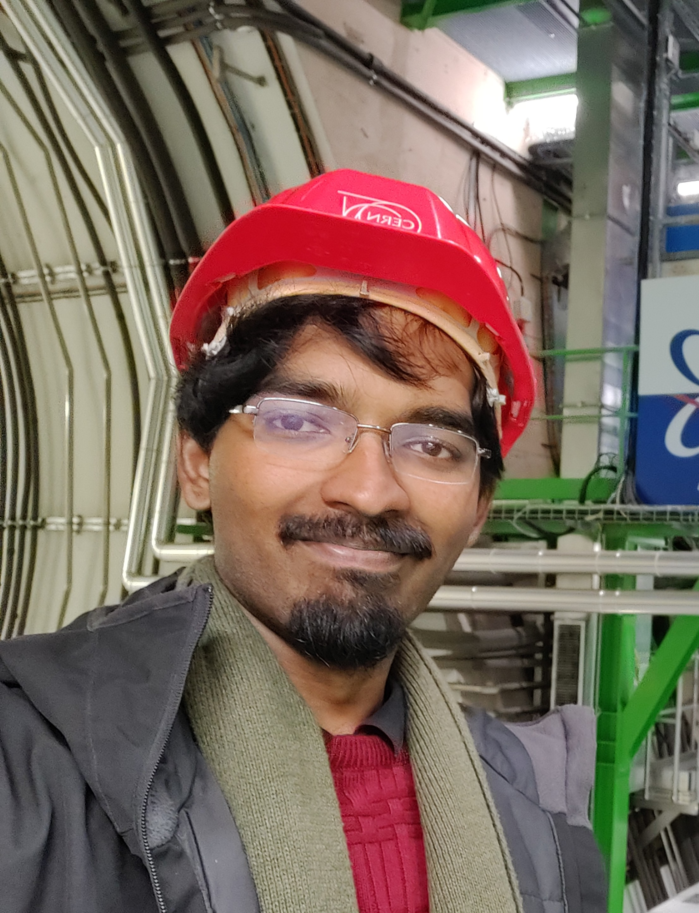

Systems & Infrastructure Engineer @CERN
Founder @Dijkstra | Systems Software Engineering | Open-Source Education
About

Currently a Systems Administrator and DevOps Engineer for Windows Systems at CERN, the European Centre for Nuclear Research, Based
in Geneva, Switzerland. I also work on Software Development and Systems Engineering Services and Research projects within this role.
My past experiences include Software Development at Hyperface, a Series A funded
Fintech Startup based in Bangalore, India; As well as a former Microsoft Student Ambassador. I am also the
founder of Dijkstra, a open-source Educational Organization for developing
the technical skills of today's students to better shape the Software Engineers of tomorrow.
Current Aim: I aim to pursue a Master's in Computer Science and Engineering, with a specialization in Systems Software Engineering. My primary motivation is to deepen my understanding of the field and determine whether I would like to continue pursuing academia—I have a strong interest in research—or further develop my expertise within industry.
Since graduating with my Bachelor's, I have had the opportunity to wear many hats professionally, but I would now like to return to my foundations in systems and low-level software engineering. In particular, I am interested in pursuing research in the areas of compilers, kernels, and operating systems. I would also like to develop a deeper understanding of the design and development of large-scale software systems, particularly through further exploration of distributed systems and high-performance computing.
Outside of this, I have also gained a large interest for researching into the Socio Economic Status of CS as a career in India, my home country. I would like to continue to study educational mechanisms to help equip students to better pursue this field, especially in the age of AI, primarily via Open Source Software Development.
Interests: Software Development, Systems Engineering, DevOps, Systems Administration, Open Source Education, Compilers, kernels, Operating Systems, Distributed Systems, Cloud Platforms, Observability, Developer Tooling, Socio-Economic Impact of Computer Science.
Education
Organization
Description
Vellore Institute of TechnologyBachelor's degree, Computer Science Engineering with a Specialization in Systems Software and IoTNov 2020 – Jun 2024
Grade: 8.51
Activities and societies: IEEE TEMS VIT, VIT Music Club
Bishop Cotton Boys' SchoolHigh School Diploma, Computer Science2005 – 2020
Grade: ISC: 93.5%. ICSE: 91.2%
Headed the Logical Reasoning and Mathematical Event, "EventX", in Bangalore's biggest inter-school Science and IT Fest, Synchronize. (2019–2020)
Member of the School Robotics Team for a duration of 4 years (2012–2016), placed in the Top 10 teams (Ranked 5th) in the All India Robotics Olympiad (2015) out of a 150 teams from all over India.
Lead a team of 3 Application Engineers to complete company wide APIGEE updation and migration, spanning over 4 microservices within the Hyperface application suite.
Developed the end-to-end functionality for AU Bank's Virtual Card Handling feature, whilst leading a team of 3 Application Engineers.
Designed and developed a centralized Cron Tracker Mechanism within our orchestrator service.
Was tasked in mentoring and conducting Knowledge Transfer sessions for 5 Application Engineers based in our Jaipur office. Lead multiple projects with their assistance.
Handled Information Security issues with Bank Dashboards, including encryption of insecure data fields, fixing enumeration issues, recreating security breaches via Burpsuite, and addition of code to preserve security.
Wrote scripts using Python to handle migration of over 2 million records from bank servers to company servers.
Fixed Phantom Subscription creation bug, by implementing missed case scenarios.
Tools Used: Apache Groovy, Grails, Java, Spring Boot, Apache Kafka, Redis, AWS, Gradle, Spring Security, Postman, MySQL. GitHub repo:EMS Application Company Link:Hyperface
Started an open-source organization that caters to students preparing for jobs within tech.
A collection of services built to cater towards preparing students for the job market by actively evaluating their profiles and giving personalized feedback based on their goals.
Lead Software Architect; Developed and currently maintaining an intricate system of services, with over 20 repositories written in various languages and frameworks, from Next.js, TypeScript, Python, FastAPI, Rust & Axum, Go & Gin and Java Spring Boot. This is to expose students to various technologies and frameworks.
Developed an in-house ranking algorithm that aggregates user data from multiple avenues, and ranks them over a 30 place scale to best predict a student’s odds at landing jobs within a certain pay grade.
Led design and student development of various sub-projects including a LaTeX resume builder, a blog mechanism for students, a certificate generator based on their proof of work, a GitHub statistics aggregator and a custom software management tool akin to Jira.
Main point of contact for overall direction and management of project. Head of DevOps and Software Infrastructure, and am currently maintaining CI/CD, Repository management, collaboration and scrum.
Currently head Systems Administrator of Azure Cloud Services for Dijkstra. Successfully transitioned API infrastructure from Netlify to Azure Cloud. Containerized and scaled API services via Kubernetes (AKS) and Docker, thereby improving response times from 45s to 2s.
Actively mentored over 30 students on a rolling basis for software development and best practices over the last year, as well as maintaining documentation, software infrastructure and deployment lifecycles.
River Bend Data SolutionsJunior Software DeveloperFeb 2022 – Aug 2022
Worked as a Junior Software Engineer, was part of the Junior Development Team and worked on ’iClinic’, a cross-platform patient & hospital management system. Worked on React-Native, NodeJS, Express JS. Also worked on Software Planning and Database Schema Design.
Created the base App for the Application, including authentication handling, form handling and Navigation Stack within React-Native.
Was appointed Junior TechLead for a period of 2 Months, tasked with junior team management, reporting of progress to the senior team, handling of sprint meetings and assigning of work within Agile Development Setting.
Other Work Experience
Part-time, freelance, contracts, consulting, and open source
Organization
Description
Chris Brown ArchitectsTechnical Support Staff · SeasonalDec 2025 – Present
IT Support specialist and administrator for Chris Brown Architects. Remote — Bengaluru, Karnataka, India.
Scale AIData Annotator · Part-timeDec 2023 – Jan 2024
Part time Data Annotator for Scale AI's 2D Image and Video Datasets and 3D Lidar Segmentation Datasets.
Contracted over a period of 2 months.
AppFlowyOpen-Source Contributor—
Handled Unit Test cases on Flutter to improve code coverage by 18% for AppFlowy's flutter bloc editor.
Made a total of 6 Pull Requests addressing various bugs in the code base.
Drafted 2 technical articles and 3 major documentation changes.
Winggit.incFront-End Web DeveloperAug 2020 – Nov 2020
Worked as a Front-End Engineer at Winggit.inc.
Designed and Implemented Current UI for Winggit’s e-commerce website, that handles the reselling of used books. Worked Primarily with Javascript, along with HTML & CSS.
Piano InstructorTeaching6 months
Taught the Piano for Children ages 10-14 for a period of 6 months. Based on Trinity Curriculum, 2 students went on to attempt their 1st grade exams under my tutelage.
Projects
Collections of work across open-source orgs, systems software, campus builds, and professional training.
Poster on CERN’s shift from CMF to Intune and Configuration Manager for Windows fleets, including migration experience for delegated admins and remaining custom tools for remote delegated management.
April 2025 | HEPiX Spring 2025 Workshop, CSCS Lugano, Switzerland
Presented CERN’s migration of 10,000+ Windows devices from the long-standing CMF MDM to Microsoft Intune and Configuration Manager co-management, covering technical challenges, open-source SSO interoperability, and improved security posture.
Affiliation: European Organization for Nuclear Research (CERN)
Overcoming Simulation Challenges in the fields of FOG and EDGE Computing via Simulation & Testing common Computational Scenarios
(Surveying Fog and Edge based Simulation Software via Simulation of Common Computational Scenarios)
Researcher
Dec 2022 – May 2023 | Vellore, TN
Worked with Dr. Baiju, Shreyas Mehrotra and Jaskaran Singh to research & identify potential weaknesses and drawbacks of some well known FOG and Edge Simulation software, such as performance limitations, lack of scalability, or insufficient documentation.
Worked with Shivansh Sahai and Dr. Swarnlatha P to create Automated Mp3 Tag Editor, a tool which scrapes metadata of music tracks from various sources, and classifies them via Machine Learning, whilst automating the entire process.
Bridging the Experience Gap: An Open Source Educational Response to India’s Computer Science Education Crisis
Researcher
March 2025 onwards
As India’s software sector faces over-saturation and a growing mismatch between graduate output and industry demand, this paper introduces Dijkstra — a student-led open-source organization that helps university students gain practical, demonstrable skills through collaborative projects, peer mentorship, and open-source contribution. It frames Dijkstra as a sustainable, scalable educational response to the experience gap and structural challenges facing tech graduates in an age of AI.
Status: Under active development
The Saturation of Software Engineering Education in India: Socio-Economic Impacts and Structural Causes
Researcher
May 2024 onwards
Examines the socio-economic consequences of saturation in India’s software engineering industry at the entry level, where CSE graduate output exceeds industry absorptive capacity and fresh graduates face a growing experience gap, tougher hiring, and intensified competition — including spillover into adjacent fields like ECE. Also investigates AI as both a disruptor and accelerant of structural change, highlighting broader educational and infrastructural gaps.
Status: Under active development
Affiliation: VIT Vellore
Optimizing Back off Time Algorithms using Reinforcement learning forecasting models
Researcher
Dec 2022 – May 2023 | Vellore, TN
Worked with Dr. Sridar Raj, Kush Ojha and Raggav Subramani to propose an innovative algorithm that leverages the power of deep learning and reinforcement learning techniques to calculate the backoff time in wireless networks. The main objective of our research is to improve the throughput and latency of the network while maintaining a high level of fairness.
Currently available as pre-print on request.
Zigbee Barrier System
Researcher & Developer
May 2021 – Jan 2022 | Vellore, TN
Worked with Dr. Yokesh Babu to research and implement a Zigbee protocol based Barrier System for the Indian Railways.
Currently available as pre-print on request.
Unpublished
Title
Details
Measuring Human Bias in Football Awards via Data-driven Performance Evaluation
Researcher
November 2023 – February 2024
Worked with Dr. Margaret Announcia and Abhimanyu Balachandra on Measuring Human Bias in Football Awards by using a Data-driven Performance Evaluation for Players in Football via Machine Learning. Project was canceled.
Cost and Resource Optimization in Container Orchestration
Researcher
June 2023 – December 2023
Worked with Dr. Lokesh Kumar N and Harshit Rastogi on researching and developing cost and resource optimization protocols within container orchestration software like Kubernetes and Docker Swarm. Project was left unpublished.
Language-oriented programming, language extensibility
MOST-flexiPL, Racket's #lang, Oz language, Mojo
Computer Architecture
Computer Architecture — ARM, RISC-V
Vector extensions
Matrix extensions
Energy efficiency
Operating Systems, Schedulers — ML Systems
Context-Switching OS (fluid CPU, x86+ARM simultaneously)
Distributed shared memory, Popcorn Linux
Interaction UX Layer on top of this — what does live, transparent OS-switching look like as a user-facing primitive rather than a backend optimization?
GPU-aware OS, LithOS
Cluster-level scheduling for ML training/inference
Extensible/programmable GPU policy via eBPF
Fine-grained preemption and latency work for GPUs
Memory management across the CPU/GPU boundary
Kernel-level software — ML Systems
Kernel-level driver work
Systems Design
Systems Design and Management
Coordinated asynchronous memory-copy as a first-class OS service
General verified/secure systems research, virtualization, and troubleshooting of complex distributed deployments
Disaggregated prefill/decode serving architectures for LLM inference
KV-cache-centric serving systems (e.g., Mooncake)
Global scheduling of ML training jobs across geo-distributed datacenters (Meta's MAST)
Distributed Systems
Continued refinement of consensus protocols + Formal verification of consensus protocol correctness
Distributed, memory management, file systems and persistent-memory-based storage systems
Decentralized/federated approaches to distributed LLM training and inference
High Performance Computing
CephFS, HTCondor (CERN) - Traditional interconnect topology and network-fabric research for scientific computing clusters
HPC and AI infrastructure convergence
Interconnect bandwidth scaling for GPU-to-GPU traffic (NVLink/NVSwitch, RDMA for AI clusters)
Parallelism and Multi-threading/processing optimizations
Lock-free and wait-free concurrent data structures
GPU-initiated (device-initiated) communication
Fine-grained GPU scheduling/multitasking
AI/ML Systems
DevOps
MLOps/LLMOps lifecycle management
AgentOps
Autonomous/closed-loop retraining
AI Observability
Edge MLOps
Applied AI/ML
ContextGPT — Code Digital Twin, Human Digital Twin, Personalized LLM Agents
DB Systems
CXL-based memory disaggregation (CXL/RDMA)
CXL memory architectures for LLM KV-cache management
KV-cache-as-a-database
Agent memory architecture
GPU-native vector search
Data agents
Secondary Focus Areas
Computer Science Education
How to use Open Source for empowering students to develop development and foundational CS skills
Effects of AI on entry-level Computer Science training — the good and the bad
Socio-Economics of Computer Science as a profession
Activities
Talks, technical training, volunteering, fellowships, workshops, and certifications.
Extra curriculars and other things I do in my free time.
Music
Can play the Piano and Guitar at a professional level, having undertaken classes for over 10 years. Also did Violin for over 5 years, and can play the Pipe Organ as well as the Accordion.
Used to teach the Piano and helped prepare students for the Trinity College Examinations in Music (from Grades 1–3).
Regularly play the Piano, Guitar and Bass Guitar at Church, both back home in India, as well as here in Geneva.
Contributed as a Pianist in a couple of singles for artists like Ann Kay and Erik Issobotosn.
Long time member of various gospel choirs:
Bishop Cotton Boys School Choir (10 years, Soprano), Lead Vocalist for 2 years
Glorious Youth Choir (2 years, Soprano)
Indiranagar Methodist Church Choir (6 years, Tenor/Baritone)
Sanctuary Kids Choir (4 years, Soprano)
I also have the habit of maintaing my own music library locally through my Automated MP3 Tag Editor, I also collect music from friends and family, and try to maintain them as if they were published (though often times they aren't :')
I still teach the piano and the guitar unofficially to friends here in Geneva via Music workshops — helps people get interested in Music :)
Media
I love consuming good media.
Reading — Voracious reader; I love collecting books from places that I visit. Feel free to reach out if you'd like a Goodreads recommendation or two :)
TV Shows and Series — Feel free to reach out if you'd like my IMDB watchlist, as well as my Letterbox reviews list.
Writing
I love writing, and for a long time as a kid, I wanted to become a novelist and a writer. I consistently scored the highest in my school for English, especially essay writing.
I penpal a lot! I maintain penpaling friendships (via Gmail as well as Slowly) with many people around the world.
I love writing about life, human struggles, reflections from a life lived, and learnings. When I was younger I loved writing stories; I hope I can get back to it someday.
Watchmaking
A hobby I've picked up after moving to Geneva. Would like to start assembling and disassembling watch movements soon.
Travelling
I love travelling, mostly to try and get a glimpse of what life's like in a place different from my own. Visited 18 countries, would like to visit more.
Home Design & Architecture
Another of my buried dreams — for a long time I wanted to become an architect (following my dad). I've designed my dream home on SketchUp, and I'm sure Minecraft isn't the same as architecture, but I used to be a megabuilder on MC.
Loads of other interests
Photography - Feel free to check out my VSCO for my photography portfolio.
Cooking
Gaming - Feel free to reach out if you play PES, FC, Valorant, Minecraft or any single player story games :D
Sports - I love watching Football, Cricket, Tennis and F1 (and I can talk about any of them for hours XD)
I'm someone who loves learning about new things. I've always picked up things fairly quickly, just out of curiosity. That's why I have so many extracurriculars.
Am I a master at all of them? Probably not. But I enjoy them all nonetheless, and I can talk for hours on end about any of them.
There's quite a lot of intersection between them all too — cooking and people, travelling and photography, coding and music. I love trying to combine interests. :)
It always brings me to the idea of Sylvia Plath's "Fig Tree": the idea that there are many paths before us, and the melancholy that comes with making a choice.